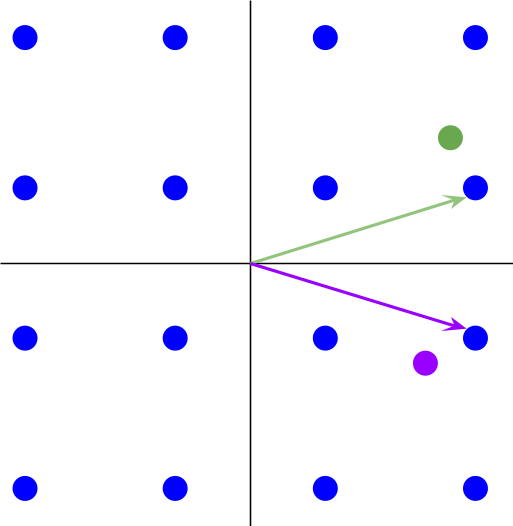
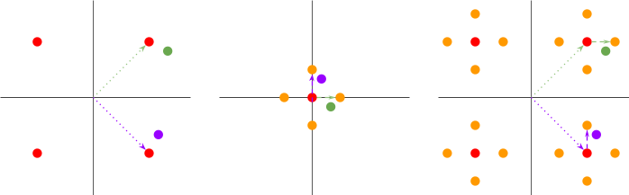

Vector Quantization (VQ)
Introduction to Vector Quantization (VQ).
Main idea
This blog post is about Vector Quantization (VQ).
The main idea is to:
Encode a vector by mapping it to a codebook vector.
Both the input vector and the codebook vector are continuous (real valued).
The quantization comes from the discrete choice of the codebook vector from the codebook.
Plain VQ
- Perform a single mapping.
Information content
For \(N\) codebook vectors, if we consider all the codebook vectors equally probable,
The probability of choosing any vector is \(\frac{1}{N}\),
and the information content is \(- \log_{x}(\frac{1}{N}) = \log_{x}(N)\).
The unit of the information content depends on the choice of the base of the \(\log\).
For base 2
The unit is in bits.
The information content is \({b = log}_{2}N\) bits.
Thus, to convey \(b\) bits, the number of codebook vectors \(N\) is such that
\(\log_{2}N = b\)
\({N = 2}^{b}\) codebook vectors.
Visual representation

\(N = 16\) codebook vectors (blue dots).
Information content: \(\log_{2}(16) = 4\) bits.
Residual VQ (RVQ)
Perform \(m\) mappings, from coarse to fine, each with less codebook vectors than plain VQ.
The number \(N\) of codebook vectors grows exponentially with the information content \(b\) we want to convey.
Split the information content \(b\) in \(m\) mappings, each requiring exponentially less codebook vectors than the plain VQ mapping.
Map the space coarsely and then more precisely instead of mapping the entire space precisely.
Each precise mapping is done relative to the previous coarser mapping.
The mappings are hierarchical.
Information content
Share the \(b\) bits between the \(m\) mappings.
Each mapping convey \(\frac{b}{m}\) bits.
- Hence, \(2^{\frac{b}{m}}\) codebook vectors are required for each mapping.
The total number of codebook vectors is \({m\ 2}^{\frac{b}{m}}\).
Which is much smaller than \(2^{b}\).
Visual representation

\(N_{1} + N_{2} = 4 + 4 = 8\) codebook vectors (red and orange dots).
Information content: \(\log_{2}(4) + \log_{2}(4) = 2 + 2 = 4\) bits.
Comparison
Main idea
RQV reduces the complexity of the quantization problem.
RQV reduces the number of required codebooks.
RVQ does not reduce the number of transmitted bits.
Visual representation
In plain VQ, the entire space is mapped with as many codebook vectors as possible,
- i.e. \(2^{b}\) codebook vectors for \(b\) bits.
But \(2^{b}\) grows very fast with \(b\).
In RVQ
Map the entire space with a few codebook vectors first (red dots).
Assign the continuous vector to one of these coarse codebook vectors (dotted arrows).
Compute the error vector or residual vector (dashed arrows).
Regardless of which coarse vector was selected, this residual vector lives in a smaller space (the space between the coarse vectors).
Map this smaller space with a few additional codebook vectors (orange dots).
Assign the residual vector to one of these codebook vectors.
Compute a new residual vector.
And so on.
The final quantized vector in the sum of the codebooks vectors.
Coarse codebook vector
+ residual codebook vector (relative to the coarse codebook vector)
+ residual codebook vector (relative to the previous residual codebook vector)
+ ...

Information content
For a budget of \(b\) bits,
QV spends the budget in one mapping with \(N = 2^{b}\) codebook vectors.
\(N\) vectors represent \(\log_{2}(N)\) bits.
\(\log_{2}(N) = \log_{2}(2^{b}) = b\) bits.
RQV spends the budget with \(m\) mappings.
Each mapping \(i\) represents \(\log_{2}(N_{i})\) bits.
Thus, \(\sum_{i = 1}^{m}\ \log_{2}(N_{i}) = b\).
\(b = \log_{2}(N) = \sum_{i = 1}^{m}\ \log_{2}(N_{i})\)
Thus, \(N = \prod_{i = 1}^{m}N_{i}\)
Which is much smaller than \(\sum_{i = 1}^{m}N_{i}\).
Thus, RQV uses far fewer codebook vectors (\(\sum_{i = 1}^{m}N_{i}\)) than QV (\(N = \prod_{i = 1}^{m}N_{i}\)).
Number of codebook vectors
Plain VQ
- \(2^{b}\)
RQV
- \({m\ 2}^{\frac{b}{m}} \ll 2^{b}\)